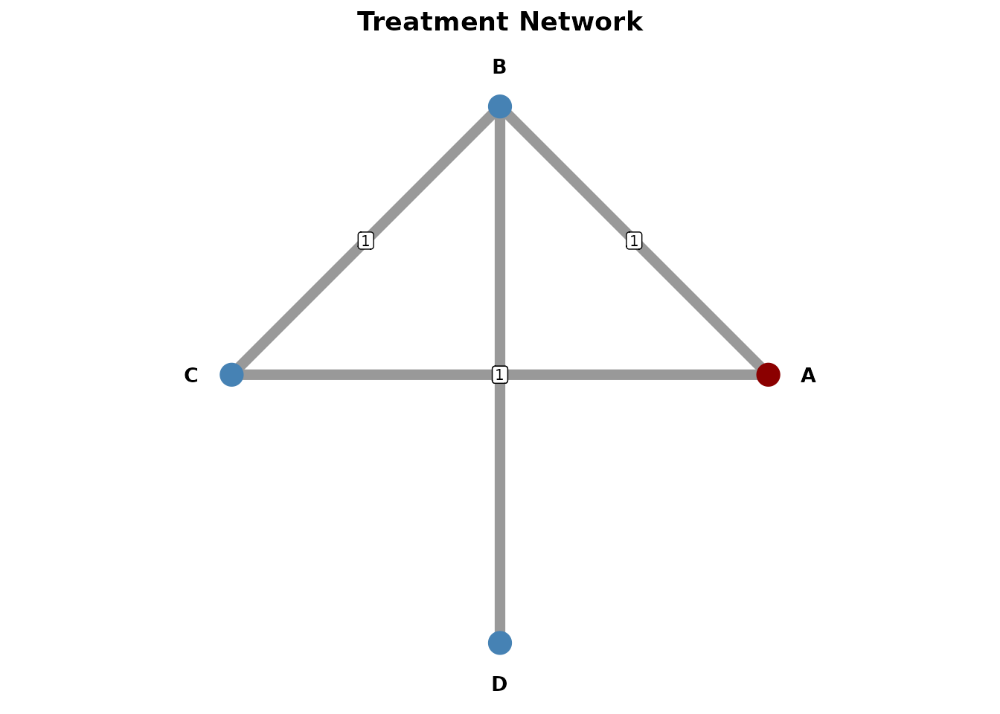

Introduction
pharmhand provides comprehensive functions for meta-analysis and network meta-analysis (NMA), supporting German HTA requirements (G-BA/IQWiG).
Pairwise Meta-Analysis
Basic Meta-Analysis
The [meta_analysis()] function performs fixed or random
effects meta-analysis.
# Five studies with hazard ratios
yi <- log(c(0.75, 0.82, 0.68, 0.91, 0.77))
sei <- c(0.12, 0.15, 0.18, 0.14, 0.11)
result <- meta_analysis(
yi = yi,
sei = sei,
study_labels = paste("Study", 1:5),
effect_measure = "hr",
model = "random",
method = "REML",
knapp_hartung = TRUE
)
result@estimate
#> [1] 0.7823178
result@ci
#> [1] 0.6840484 0.8947045
result@heterogeneity$I2
#> [1] 0Heterogeneity Assessment
The [calculate_heterogeneity()] function computes
heterogeneity statistics including Q, I², and τ².
het <- calculate_heterogeneity(yi, sei, method = "REML")
het$Q
#> [1] 2.009819
het$I2
#> [1] 0
het$tau2
#> [1] 214637.8
het$interpretation
#> [1] "Low heterogeneity"Leave-One-Out Sensitivity Analysis
The [leave_one_out()] function performs leave-one-out
sensitivity analysis to identify influential studies.
loo <- leave_one_out(result)
loo$results[, c("excluded_study", "estimate_display", "I2")]
#> excluded_study estimate_display I2
#> 1 Study 1 0.7906126 0
#> 2 Study 2 0.7731710 0
#> 3 Study 3 0.8102179 0
#> 4 Study 4 0.7533013 0
#> 5 Study 5 0.7854280 0
loo$influential_studies
#> [1] "Study 3" "Study 4"Forest Plot
The [create_meta_forest_plot()] function creates forest
plots for visualizing meta-analysis results.
plot <- create_meta_forest_plot(result, title = "Treatment Effect (HR)")
plot@plot
#> Warning in ggplot2::scale_x_log10(limits = xlim): log-10
#> transformation introduced infinite values.
#> `height` was translated to `width`.
Funnel Plot and Publication Bias
The [create_funnel_plot()] function creates funnel plots
to assess publication bias.
funnel <- create_funnel_plot(result, title = "Funnel Plot")
funnel@plot
The [eggers_test()] function performs Egger’s test for
funnel plot asymmetry.
egger <- eggers_test(yi = yi, sei = sei)
egger$p_value
#> [1] 0.8929091
egger$interpretation
#> [1] "No significant asymmetry detected (p >= 0.10)"Trim-and-Fill
The [trim_and_fill()] function performs trim-and-fill
analysis to adjust for publication bias.
tf <- trim_and_fill(result)
tf$n_imputed
#> [1] 0
tf$interpretation
#> [1] "No missing studies detected"Indirect Comparison
The [indirect_comparison()] function performs indirect
comparisons using the Bucher method.
# Bucher method: A vs B via common comparator C
indirect <- indirect_comparison(
effect_ab = log(0.75), # A vs C
se_ab = 0.12,
effect_bc = log(0.85), # B vs C
se_bc = 0.10,
effect_measure = "hr",
label_a = "Drug A",
label_b = "Placebo",
label_c = "Drug B"
)
indirect@estimate
#> [1] 0.8823529
indirect@ci
#> [1] 0.6496514 1.1984068Network Meta-Analysis
The [network_meta()] function performs network
meta-analysis for multiple treatments.
Basic NMA
nma_data <- data.frame(
study = c("S1", "S2", "S3", "S4"),
treat1 = c("A", "B", "A", "B"),
treat2 = c("B", "C", "C", "D"),
effect = log(c(0.75, 0.90, 0.80, 0.85)),
se = c(0.12, 0.15, 0.18, 0.14)
)
nma <- network_meta(nma_data, effect_measure = "hr")
nma@comparisons
#> # A tibble: 4 × 9
#> treatment vs estimate ci_lower ci_upper se n_studies evidence rank
#> <chr> <chr> <dbl> <dbl> <dbl> <dbl> <int> <chr> <dbl>
#> 1 A A 1 1 1 0 NA reference NA
#> 2 B A 0.75 0.593 0.949 0.12 1 direct 2
#> 3 C A 0.8 0.562 1.14 0.18 1 direct 3
#> 4 D A 0.638 0.444 0.915 0.184 2 indirect 1Network Geometry Plot
The [create_network_plot()] function creates network
geometry plots to visualize treatment networks.
net_plot <- create_network_plot(nma, title = "Treatment Network")
net_plot@plot
SUCRA Rankings
The [calculate_sucra()] function calculates SUCRA
(Surface Under the Cumulative Ranking) scores for treatment
rankings.
sucra <- calculate_sucra(nma)
sucra$ranking
#> treatment mean_rank sucra prob_best prob_worst final_rank
#> D D 1.614 79.53333 0.585 0.027 1
#> B B 2.141 61.96667 0.216 0.020 2
#> C C 2.422 52.60000 0.199 0.122 3
#> A A 3.823 5.90000 0.000 0.831 4
sucra$interpretation
#> [1] "Treatment ranking by lower is better (SUCRA, %). Best: D (79.5%), Worst: A (5.9%)"League Table
The [create_league_table()] function creates league
tables showing pairwise treatment comparisons.
league <- create_league_table(nma)
league@data
#> # A tibble: 4 × 5
#> Treatment A B C D
#> <chr> <chr> <chr> <chr> <chr>
#> 1 A A 1.33 (1.05, 1.69)* 1.25 (0.88, 1.78) 1.57 (1.09,…
#> 2 B 0.75 (0.59, 0.95)* B 0.94 (0.61, 1.43) 1.18 (0.76,…
#> 3 C 0.80 (0.56, 1.14) 1.07 (0.70, 1.63) C 1.25 (0.76,…
#> 4 D 0.64 (0.44, 0.92)* 0.85 (0.55, 1.31) 0.80 (0.48, 1.32) DTransitivity Assessment
The [assess_transitivity()] function assesses the
transitivity assumption in network meta-analysis.
chars <- data.frame(
study_id = c("S1", "S1", "S2", "S2", "S3", "S3", "S4", "S4"),
treatment = c("A", "B", "B", "C", "A", "C", "B", "D"),
mean_age = c(55, 55, 58, 58, 52, 52, 60, 60),
pct_male = c(60, 60, 65, 65, 55, 55, 70, 70)
)
transit <- assess_transitivity(
study_characteristics = chars,
char_vars = c("mean_age", "pct_male"),
continuous_vars = c("mean_age", "pct_male")
)
transit$overall_assessment
#> [1] "Transitivity assumption appears reasonable"Consistency Assessment
A key assumption in network meta-analysis is consistency between direct and indirect evidence. pharmhand provides tools to assess this assumption.
Comparing Direct and Indirect Evidence
When both direct (head-to-head) and indirect evidence exist for a comparison, we can test whether they agree:
# Suppose we have direct evidence for A vs B from a head-to-head trial
direct <- list(
estimate = log(0.78),
se = 0.14
)
# And indirect evidence via common comparator C
indirect <- indirect_comparison(
effect_ab = log(0.75), # A vs C
se_ab = 0.12,
effect_bc = log(0.96), # B vs C
se_bc = 0.11,
effect_measure = "hr",
label_a = "A",
label_b = "C",
label_c = "B"
)[compare_direct_indirect()] compares direct and indirect
evidence for consistency.
# Compare direct and indirect evidence
consistency <- compare_direct_indirect(
direct_result = direct,
indirect_result = indirect,
effect_measure = "hr"
)
consistency$direct_estimate
#> [1] 0.78
consistency$indirect_estimate
#> [1] 0.78125
consistency$inconsistency_p
#> NULL
consistency$is_consistent
#> NULLA non-significant p-value (p > 0.05) suggests the direct and indirect evidence are consistent, supporting the validity of the indirect comparison.
Node-Splitting Analysis
The [node_splitting()] function performs node-splitting
analysis to assess inconsistency in network meta-analysis.
For network meta-analyses, node-splitting separates direct and indirect evidence for each comparison to identify potential inconsistencies:
# Node-splitting analysis on our NMA
ns <- node_splitting(nma)
ns$results
#> # A tibble: 3 × 17
#> comparison reference direct_estimate direct_se direct_ci_lower direct_ci_upper
#> <chr> <chr> <dbl> <dbl> <dbl> <dbl>
#> 1 A vs B A 0.75 0.12 0.593 0.949
#> 2 B vs C A 0.9 0.15 0.671 1.21
#> 3 A vs C A 0.8 0.18 0.562 1.14
#> # ℹ 11 more variables: n_direct <int>, indirect_estimate <dbl>,
#> # indirect_se <dbl>, indirect_ci_lower <dbl>, indirect_ci_upper <dbl>,
#> # n_indirect <int>, bridge <chr>, inconsistency_z <dbl>,
#> # inconsistency_p <dbl>, model <chr>, conf_level <dbl>
ns$note
#> [1] "Full node-splitting requires re-analysis excluding direct evidence. Results shown are simplified."Node-splitting helps identify specific comparisons where direct and indirect evidence may disagree, which could indicate violations of the transitivity assumption.
Bayesian Meta-Analysis
For researchers preferring Bayesian inference, pharmhand provides an
interface to Bayesian meta-analysis using the brms package via the
[bayesian_meta_analysis()] function. This allows
specification of informative priors and provides full posterior
distributions.
Basic Bayesian Meta-Analysis
# Bayesian random-effects meta-analysis
# Requires: install.packages("brms")
bayes_result <- bayesian_meta_analysis(
yi = yi,
sei = sei,
study_labels = paste("Study", 1:5),
effect_measure = "hr",
prior_mu = list(mean = 0, sd = 10),
prior_tau = list(type = "half_cauchy", scale = 0.5),
chains = 4,
iter = 4000,
adapt_delta = 0.95,
max_treedepth = 12,
seed = 12345
)
# Posterior summary statistics
bayes_result$posterior_mean # Mean of posterior distribution
bayes_result$posterior_median # Median of posterior distribution
bayes_result$ci_95 # 95% credible interval
bayes_result$prob_benefit # P(HR < 1)
bayes_result$prob_superior # P(HR < 0.9)Convergence Diagnostics
The [bayesian_meta_analysis()] function now
automatically reports convergence diagnostics to ensure reliable
results:
# Access convergence diagnostics
bayes_result$convergence_diagnostics
# Check individual metrics
bayes_result$convergence_diagnostics$max_rhat # Should be <= 1.01
bayes_result$convergence_diagnostics$min_bulk_ess # Should be >= 400
bayes_result$convergence_diagnostics$min_tail_ess # Should be >= 400
bayes_result$convergence_diagnostics$divergent_transitions # Should be 0Warnings are automatically issued when convergence issues are detected. To improve convergence:
- Increase
adapt_deltaparameter (try 0.99 or 0.999) - Increase
iterfor more samples - Use more informative priors
Predictive Checks
Posterior Predictive Checks
Assess model fit to the observed data:
# Enable posterior predictive checks
bayes_result <- bayesian_meta_analysis(
yi = yi,
sei = sei,
effect_measure = "hr",
posterior_predictive = TRUE,
pp_check_type = "dens_overlay",
pp_ndraws = 100
)
# View posterior predictive plot
bayes_result$pp_check_plot
# Check Bayesian p-value (should be around 0.5 for good fit)
bayes_result$posterior_predictive$bayes_p_valuePrior Predictive Checks
Evaluate prior reasonableness before seeing data:
# Fit with prior-only
bayes_result <- bayesian_meta_analysis(
yi = yi,
sei = sei,
effect_measure = "hr",
prior_predictive = TRUE
)
# View prior distribution
bayes_result$prior_predictive$summaryTrace Plots
The [create_bayesian_trace_plots()] function visualizes
MCMC chain convergence:
# Create combined trace plots
trace_plot <- create_bayesian_trace_plots(bayes_result)
print(trace_plot)
# Create individual parameter plots
trace_plots <- create_bayesian_trace_plots(
bayes_result,
parameters = c("b_Intercept", "sd_study__Intercept"),
combine_plots = FALSE
)
print(trace_plots$b_Intercept)Good convergence shows: - Well-mixed chains (no drift or stickiness) - Similar distributions across chains - Rapid autocorrelation decay
Prior Sensitivity Analysis
The [prior_sensitivity_analysis()] function tests how
results change with different prior specifications:
# Run sensitivity analysis with default scenarios
sensitivity <- prior_sensitivity_analysis(
yi = yi,
sei = sei,
effect_measure = "hr",
chains = 2,
iter = 2000
)
# Compare estimates across priors
sensitivity$comparison
# View robustness summary
sensitivity$sensitivity_summary$robustness_interpretationOr specify custom prior scenarios:
custom_scenarios <- list(
skeptical = list(
prior_mu = list(mean = 0, sd = 0.5),
prior_tau = list(type = "half_cauchy", scale = 0.3)
),
optimistic = list(
prior_mu = list(mean = -0.5, sd = 1),
prior_tau = list(type = "half_cauchy", scale = 0.2)
)
)
sensitivity <- prior_sensitivity_analysis(
yi = yi,
sei = sei,
effect_measure = "hr",
prior_scenarios = custom_scenarios
)IQWiG-Compliant Reporting
The [format_bayesian_result_iqwig()] function formats
Bayesian results for German HTA submissions:
# Format for IQWiG submission
formatted <- format_bayesian_result_iqwig(
bayes_result,
locale = "de" # German locale
)
# View formatted components
formatted$estimate # "0.790"
formatted$ci # "[0.712; 0.877]"
formatted$probability # "P(HR < 1) = 98.5%"
formatted$interpretation # Complete interpretation
# Export full formatted text
formatted$full_textThe [create_bayesian_forest_plot_iqwig()] function
creates IQWiG-compliant forest plots:
# Create IQWiG-formatted forest plot
study_data <- data.frame(
yi = yi,
sei = sei,
study_labels = paste("Study", 1:5)
)
forest_iqwig <- create_bayesian_forest_plot_iqwig(
bayes_result,
study_data = study_data,
locale = "de",
title = "Behandlungseffekt (HR)"
)
print(forest_iqwig)Note: Bayesian meta-analysis requires the
brms package and a working Stan installation. Install with
install.packages("brms"). For users without brms, the
frequentist [meta_analysis()] function provides an
alternative.
Advantages of the Bayesian approach include:
- Natural interpretation of credible intervals as probability statements
- Ability to incorporate prior knowledge
- Full posterior distributions for all parameters
- Better handling of small sample sizes
Summary
pharmhand provides a complete toolkit for evidence synthesis:
| Function | Purpose |
|---|---|
[meta_analysis()] |
Fixed/random-effects meta-analysis |
[calculate_heterogeneity()] |
Q, I², τ² statistics |
[leave_one_out()] |
Sensitivity analysis |
[create_meta_forest_plot()] |
Forest plot visualization |
[create_funnel_plot()] |
Publication bias assessment |
[eggers_test()] |
Funnel asymmetry test |
[trim_and_fill()] |
Bias adjustment |
[indirect_comparison()] |
Bucher indirect comparison |
[compare_direct_indirect()] |
Test direct vs indirect consistency |
[network_meta()] |
Network meta-analysis |
[create_network_plot()] |
Network geometry |
[calculate_sucra()] |
Treatment rankings |
[create_league_table()] |
Pairwise comparisons |
[assess_transitivity()] |
Transitivity check |
[node_splitting()] |
NMA inconsistency testing |
[bayesian_meta_analysis()] |
Bayesian meta-analysis (via brms) |
[create_bayesian_trace_plots()] |
MCMC trace plot visualization |
[prior_sensitivity_analysis()] |
Prior sensitivity analysis |
[format_bayesian_result_iqwig()] |
IQWiG formatting for Bayesian results |
[create_bayesian_forest_plot_iqwig()] |
IQWiG-compliant forest plots |